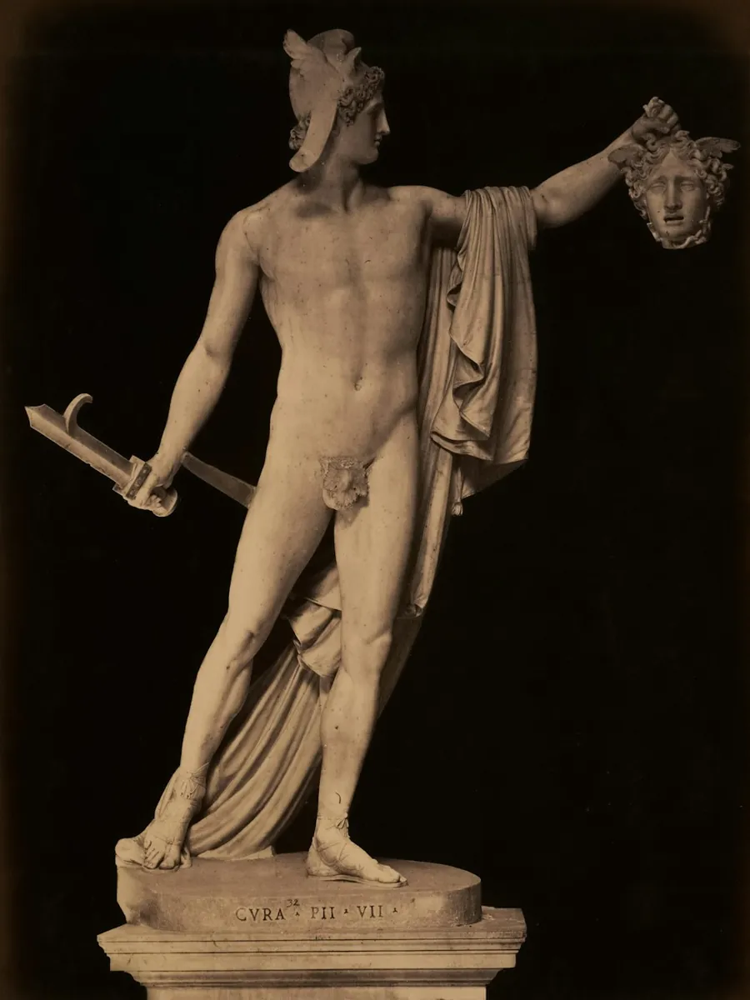
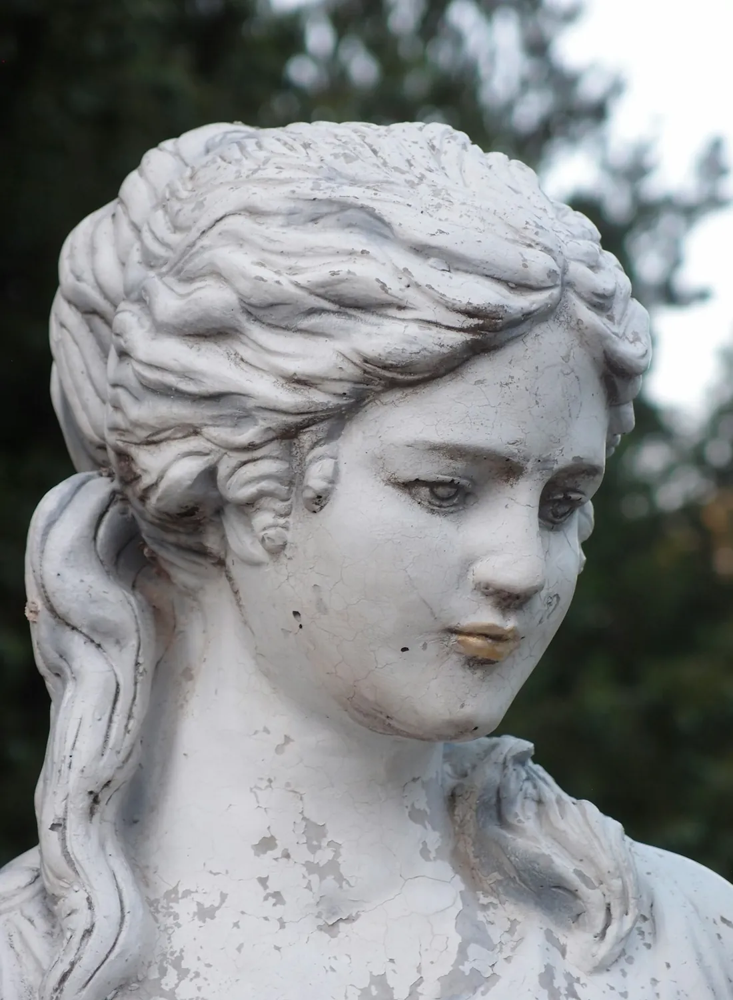
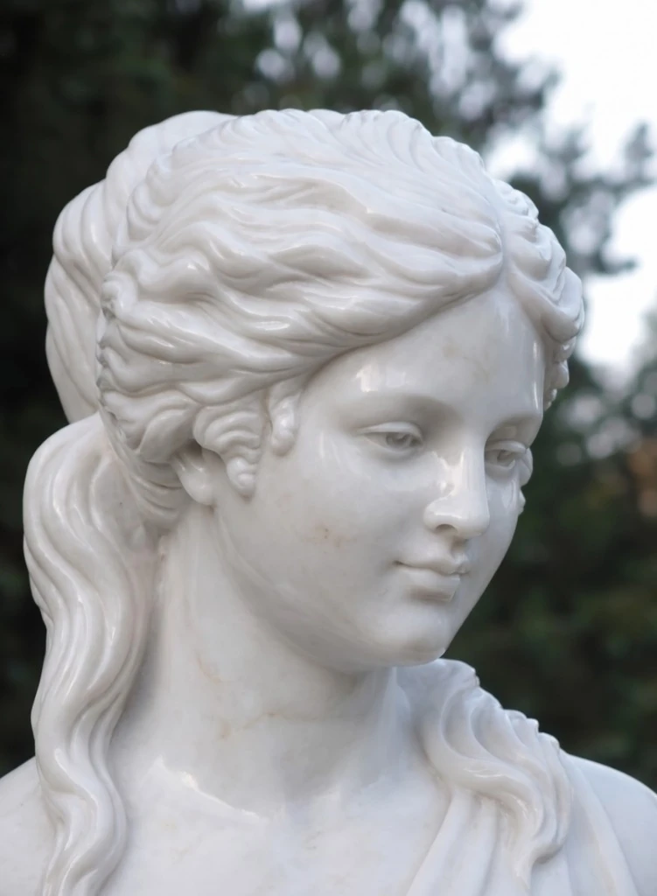

Мастерская стекла · Санкт-Петербург
Возвращаем стеклу зеркальную гладь
Убираем царапины, потёртости и помутнения с окон, витрин, автомобильных стёкол и столешниц. Шлифуем, полируем и проверяем под боковым светом, пока стекло снова не станет невидимым.



Мрамор и стекло
Обоим возвращает жизнь одно и то же: полировка.
Зеркальная поверхность ничего не скрывает. Так же мы работаем со стеклом: убираем всё, что мешает ему быть чистым и ровным, — от тонкой паутинки царапин до глубоких следов щёток и абразива.
Петербургское ремесло
Здесь шлифуют камень и стекло с 1721 года
-
1721
Мельница Петра I
По указу Петра I в Петергофе поставили водяную мельницу, чтобы пилить и полировать камень. Из неё выросла Императорская гранильная фабрика, а потом часовой завод, который работает там до сих пор.
-
XVIII век
Зеркало вручную
Стекло шлифовали песком с водой, водя лист по листу десятки часов. Потом доводили войлоком с крокусом, тонким порошком окиси железа, пока матовая муть не становилась зеркалом.
-
Сегодня
Тот же принцип
Зерно, вода и войлок. Только вместо крокуса оксид церия, а вместо дней часы. Стекло мы не меняем, а возвращаем ему гладь, как мастера три века назад.
Что мы делаем
Ремесло в пяти действиях
-
I
Удаление царапин
Окна, витрины, перегородки, стеклянные двери. Убираем следы от чистки, пескоструя, колец и ключей, не меняя стекло.
-
II
Шлифовка и матирование
Ровная однородная матовая поверхность по заданному рисунку. Для дверей, перегородок, декоративных панелей.
-
III
Столешницы и мебель из стекла
Стеклянные столы, полки, витрины. Работаем на месте или забираем в мастерскую.
-
IV
Восстановление после налёта
Известковый налёт, водный камень, «радужные» разводы, коррозия стекла на старых окнах и душевых кабинах.
- V
Шлифовка и полировка металла
Нержавеющая сталь, латунь, алюминий, фурнитура и элементы интерьера. Убираем царапины, потёртости и окислы, выводим в сатин или зеркальный блеск.
Как работаем
Четыре шага от мутного стекла до прозрачного
- I
Осмотр
Ведём боковой свет по стеклу: так видна каждая царапина. Оцениваем глубину и честно говорим, что уйдёт совсем.
- II
Шлифовка
Снимаем минимальный слой, от крупного зерна к мелкому. Царапины уходят, стекло на время становится матовым.
- III
Полировка
Войлочный круг и оксид церия возвращают прозрачность. Матовость уходит круг за кругом.
- IV
Контроль
Проверяем на просвет и в отражении. Сдаём, только когда не видно ни искажений, ни следов работы.
Примеры работ
До и после
Здесь появятся фотографии реальных работ. Потяните ползунок, чтобы сравнить «до» и «после».
Сроки и условия
Сколько это занимает
- от 1 дня
Одна поверхность: окно, дверь, столешница. Зависит от глубины царапин.
- 2–5 дней
Витрины, перегородки и крупные объекты, где работаем в несколько этапов.
- в тот же день
Выезд на замер и оценка стоимости. Условия выезда уточняются.
Время работы: [дни] 8:00–20:00 · Гарантия: [срок]
Связаться с нами
Расскажите о вашем стекле
Пришлите фото и размеры. Скажем, что можно сделать и сколько это будет стоить.
Написать в Telegram- Telegram@your_username
- Телефон+7 (000) 000-00-00
- Почтаhello@example.com
- WhatsApp+7 (000) 000-00-00
- ГородСанкт-Петербург